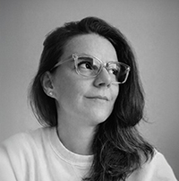

About

I am a Product Designer with a rich and diverse background spanning digital product design, VR experiences, and art direction.
My journey has taken me from leading immersive VR UI/UX projects in London to shaping end-to-end digital products and brand ecosystems in Istanbul.
Working across mobile, web, and emerging technologies, I translate research insights and user behavior into refined interfaces, scalable design systems,
and intelligent product experiences that grow with users.
In addition to traditional product design, I actively explore genUI and AI-driven interaction models, researching and developing new user experiences
that integrate intelligent systems to enhance personalization, efficiency, and engagement. My deep appreciation for abstract expressionism and
art-driven design informs the visual language, interaction aesthetics, and emotional resonance of the products I craft.
My time as a designer in London exposed me to fast-paced, collaborative environments that sharpened my strategic thinking,
cross-functional collaboration, and adaptive design skills. As a designer, I combine hands-on execution, strategic vision,
and a passion for experimentation—from concept to delivery—to create products that are functional, intuitive, and emotionally engaging.
Every interaction I design is guided by the belief that it should feel meaningful, immersive, and resonant.